> ITCH.IO NEWS
-
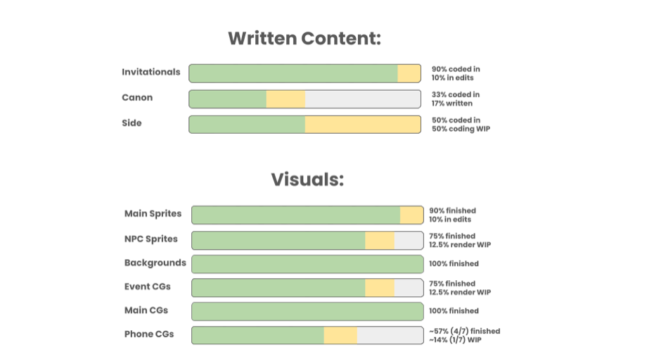
[ DELAY ] An Update Bigger Than the Game It Updates: Keyframes Pushes First Summer to November 30(BLANK) HOUSE's college slice-of-life visual novel has slipped the date its players were reading off their own Steam wishlist pages. The September 2 devlog is blunt about it: the team's "optimistic goal" was to ship First Summer, the project's first commercial update, by the end of this quarter, and instead it moves to "November 30th, 2026 at the latest." The reason given is the ordinary one, stated without spin — the summer season is nearly over and production still has a way to go, and rushing it would deliver "anything less than a fun, fulfilling summer break." What makes the post worth reading is that it shows its working, down to a bar chart. Art is almost done: backgrounds and main CGs at 100%, main sprites 90%, NPC sprites and event CGs 75%, phone CGs about 57%, with only some clothing variations and a couple of CGs outstanding. Writing is where the time is going. The two remaining pieces are what the team calls "canon" events — the biggest events in the game, the most characters, the most scenes, the most convoluted variations to manage — and they already hold 60,000 words, with roughly another 60,000 expected before they're done. About a third of the update's content is programmed, with finished sections going into the build as they're written rather than waiting for a handoff. The scale is the story: the released game, your first spring semester at Wryn Mayer with an ensemble cast of five, runs about 280,000 words; First Summer alone is already past 330,000 and counting, with 40 new location arts and 30 mix-and-match events — the milestone moments, the casual hangouts, the run-ins — from a writing team the studio has since expanded. The promise attached is a tonal one: choices that "can turn this comedic, slice-of-life story into the beginnings of a troubling drama." $25 on itch.io. Source: itch.io devlog · Game page
-
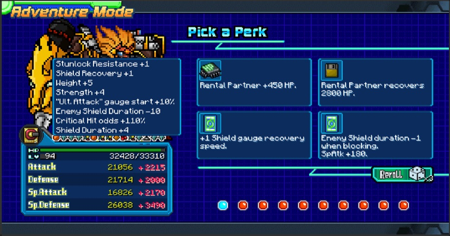
[ MAJOR UPDATE ] A Free Digimon Fan Game Turns Two and Bolts a Roguelike Onto Itselfdragonrod342's Digital Tamers 2 — the free follow-up to fan game Digital Tamers: ReBorn, a mouse-driven 1v1 platform fighter with over 400 obtainable Digimon, 120-plus challenges and 50-plus quests, running on PC and Android — marked two years on September 2 with V2.0.0, billed as its biggest update yet. The headline addition is Adventure Mode, a roguelike run in which you build up Rental Partners and try to beat 100 enemies, then choose your payout: keep the Rental Digimon, which retain up to 60% of the training stats they earned on the way, or take a Box of Leader Cartridges, portable versions of Leader Skills that slot into a Digimon's equipment. It is gated behind actually knowing the game — part one of the "A Good Friend" story, three or more Digimon in Server City, and a small Ropuremon quest. The rest of the patch reads like a developer working through two years of accumulated friction. There's finally an in-game quest log in the DigiVice menu and 60-plus new equipment items. Recruit Clockmon to Server City and he'll flip day into night on demand, which the notes justify in terms most live-service games never bother with: "Useful for those who can't play at specific times of the day but want to enjoy the full content of the game." Grind thresholds came down — the Supplemon quest now starts at 6,000 total kills instead of 10,000, Nanimon at 3,500 instead of 5,000 — and the Datamon NPC stopped resetting your Tamer Points, raising your maximum level instead so you can eventually acquire every Tamer Skill. Infinity Tower now pays Bits every ten waves, with its exclusive items moved into the Adventure Mode reward pool. And the Leader Skill buffs are not tuning so much as demolition: "greatly increase" skills go from 15% to 35%, Sacrifice from 12% to 45%, Sacrifice II from 15% to 65%, Frenzy from 2% to 20% with maxed critical odds. Source: itch.io devlog · Game page
-
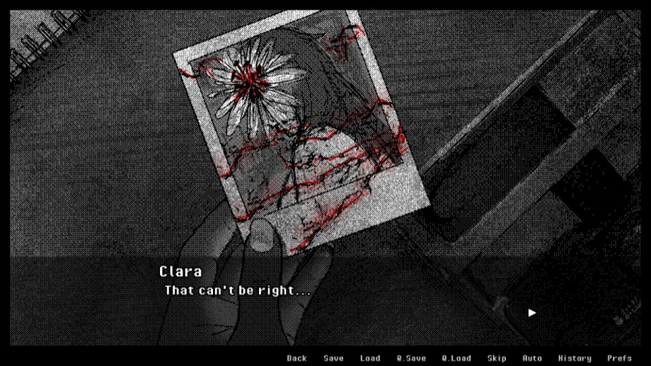
[ RELEASE ] Devil's Liminal Ships 1.0 — and Admits Its Early Access Had No Endings At AllStudio Interlude's branching horror and yuri romance visual novel left Early Access on September 1, and the devlog leads with the disclosure most studios would bury: "Early Access did NOT have any endings. The September 1st Full Release now provides all endings!" The date is not arbitrary — the story runs as daily events from June 7 to September 1, the summer Margo Silva has left in the Arizona trailer park she grew up in before college, and the 1.0 build adds the days from August 28 to September 1 that the Early Access version stopped short of. What lands with them is the whole back half of the design: five endings, two sapphic romance routes plus a secret one, dozens of new gallery images, new voice lines throughout, extra scenes, and a rebalanced soundtrack because the old one repeated. Final size is 238,000-plus words, 300-plus choices, 20+ hours, 40+ hand-drawn gallery images and a 30-song original score with an ending theme per route, all in handmade 2-bit dithered art. The premise sits at the intersection of Goethe's Faust and Portuguese folklore from the Azores — a demon's claim on Margo's soul, two mysterious girls who each say they can help, and a life of poverty and domestic violence to keep up appearances through. Save compatibility is hedged honestly: old saves should reach the endings, but a fresh run is recommended so the story progresses logically. Accessibility options include a dyslexia-friendly font and adjustable text colour and box opacity. The team's one ask is a Steam review, with the reasoning spelled out for other developers reading: "It can be one word, it can be for a partial playthrough, and it can be updated at a later date." Reception on the full release is Positive — 20 of 20 reviews so far. $13.99, cut 10% to $12.59. Source: itch.io devlog · itch.io page · Steam
-
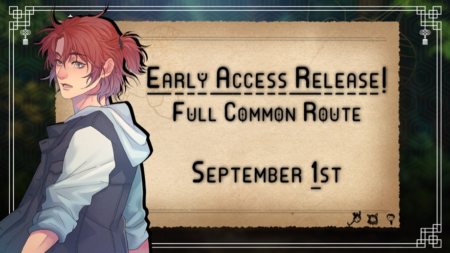
[ EARLY ACCESS ] After Years of "Is It Still Being Made?", The Inn Between Opens Its Doors in Early AccessCats on a Lilypad Studios' BL modern-fantasy visual novel went into Early Access on Steam on September 1 and on itch.io on September 2, after what the announcement calls many years of development, multiple rewrites of the script and "a lot of setbacks — life has not been very kind." The phrasing of the announcement is telling: they had been sitting on the date until Steam approvals came through, and the studio notes it gets asked often whether the game is still being made. What ships is the full common route — 120,000 words across nine chapters with three endings, against an extended demo that covered five chapters and roughly 50,000 words. The rest arrives as routes, in a stated order: Emrys, then Leon, then Solas, with each split into two parts, and the next update targeted at November 1 on Steam and November 2 on itch. Beta supporters keep getting work-in-progress chapters as they're written, and Emrys is already through chapter four. The technical work behind the release is the interesting part. The project was migrated from Ren'Py 7 to Ren'Py 8, which forced a rebuild of the entire camera system — and that rebuild bought a toggle to switch off camera panning outright, with the remaining panning slowed down. The in-game phone is no longer on a timer you can get trapped inside; it's player-interactable, which the team says was the plan from the original mockup and only now became possible. Font options were added after research into accessible typefaces and player feedback: the default is Quicksand, joined by OpenDyslexic, Helvetica and — with no apology offered — Comic Sans. The finished game is planned at 200,000+ words with three romanceable leads and character art by XianJin. $14.99 on itch.io. Source: itch.io devlog · Game page
-
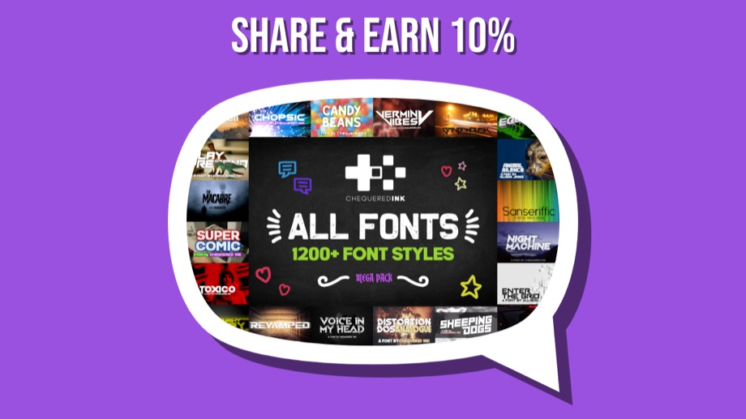
[ ASSETS ] An itch.io Asset Seller With 10,000 Copies Sold Tries Paying Its Customers to Sell ItChequered Ink's All Fonts Pack is one of the quieter success stories on itch.io's asset side — every commercial font the studio has made, 1,200-plus styles in a 23MB zip, 10,000-plus copies sold on itch alone, rated 5.0 across 147 ratings. On September 1 Daniel and Allison opened something unusual for the platform: an affiliate program, paying 10% commission to anyone who shares the pack and drives a sale. It is explicitly a trial, running only through September "(for now)", with sign-up handled off-site on the studio's own website — itch.io has no affiliate machinery of its own, so the revenue split is being administered by hand. The timing is not subtle: the pack is 90% off through the end of the month as part of the Autumn Sale, $190 down to $19, which the store page cheerfully points out is a saving of roughly eighteen thousand dollars against the studio's normal $15-per-font license. The license itself is scoped rather than unlimited — pay once, use forever in unlimited commercial projects, but intended for businesses of 20 employees or fewer with turnover under $2m; anything larger is pushed to standard font licensing. The pack currently contains fonts released up to March 12, 2026, and carries itch.io's "No generative AI was used" tag, which for a font foundry in 2026 is its own kind of sales pitch. Source: itch.io devlog · Asset page
-
[ BUNDLE ]
Games for Scholarships Gives Back Its Rebound in a Single Day
Organizer jesthehuman's back-to-school bundle collects everything submitted to the Games for Scholarships jam — 365 entries across video games, browser games and tabletop RPGs, made between July 13 and August 10 under a jam policy that barred discriminatory and AI-generated material. The resulting DRM-free package is 324 items from 159 creators for a $10 minimum, against a regular value of roughly $681. Every dollar goes to Games for Change, funding scholarships for underserved youth in the G4C Student Challenge, the nonprofit's global design competition for students aged 10 to 25. Five days after the original $10,000 target fell and the organiser doubled the post to $20,000, the page reads $14,220.57 raised, 71% funded, from 1,178 contributors averaging $12.07 each with a $75 top contribution. The past day added $165 and 14 backers, which rereads yesterday's number entirely: the $704 jump that broke a four-day slide ($896, $659, $597) now looks like a one-day bump on September 1 rather than a second wind, and this is the weakest day the bundle has posted. Eighteen days left and roughly $5,780 still to find — about $321 a day, against a run rate that just came in at half that. Source: itch.io bundle page · Jam page
> INDIE SCENE
-
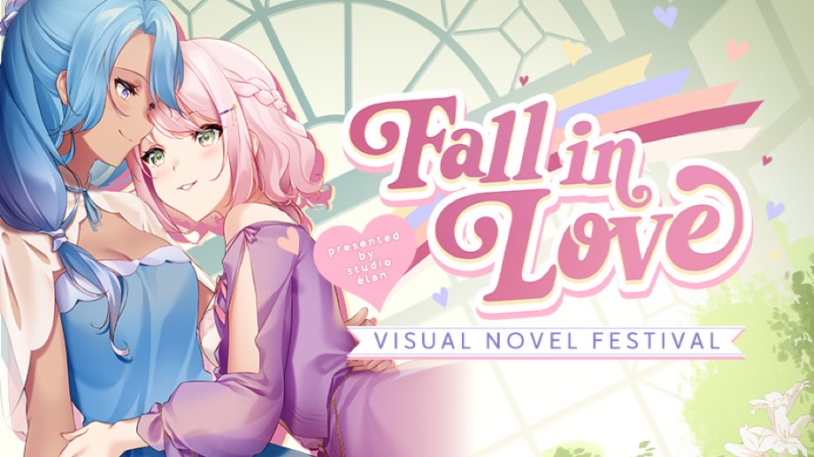
[ FESTIVAL ] A Visual Novel Studio Runs Its Own Steam Festival — and Today It Puts On a ShowcaseSteam's calendar is dominated by Valve-run sales, so it's worth noting who is behind the Fall in Love Festival, running September 1 to 9: not Valve and not a publisher, but Studio Élan, the developer of Highway Blossoms, Heart of the Woods and Please Be Happy — a small yuri VN studio curating a storefront event for hundreds of romance-themed visual novels, with discounts, demos and developer streams. "Romance" turns out to be load-bearing rather than limiting: the lineup runs from an otome comedy about a girl cursed to tell the worst dad jokes imaginable (Jest Messters) to a psychological horror about a dystopian company that serves mermaids as food (Mermaids are Seafood), a medieval resource-management and political-intrigue romance (Imperial Grace), a rotoscoped interactive comic (After the Wane), and Devil's Liminal, which shipped its 1.0 into the middle of it. The festival's own showcase stream airs today, September 3, at 19:00 UTC — 7am Friday, September 4, in the host's timezone — running trailers for featured games. What the festival is actually worth is best measured in what small teams do with it: Maroon Ink Studio timed the first public demo of Nozomu School Daze to opening day, then spelled out the arithmetic behind the ask most developers dress up — "Steam reviews give us SO much visibility. If we get 10 of them (yes, just 10!!) on our main game page, the algorithm starts actively promoting our game." Source: Yeah Nah Gaming · Festival page · Maroon Ink devlog
-
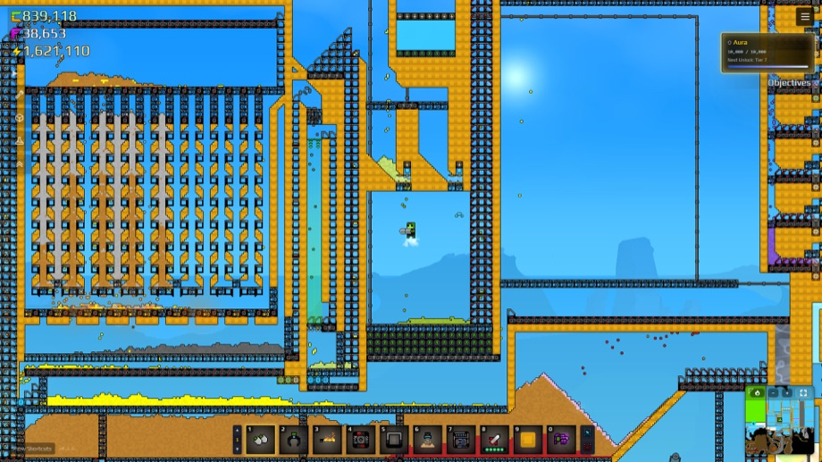
[ MILESTONE ] Sandustry Clears 100,000 Sales in Its First Week of Early AccessPublisher Hooded Horse says Lantto Games' falling-sand factory builder passed 100,000 copies barely a week after its August 13 Early Access launch, alongside an Overwhelmingly Positive Steam rating from more than 2,000 reviews. The hook is that every pixel of the world is a real resource waiting to be mined, mixed, processed or destroyed, spread across a fully destructible open world seeded with artifacts from an ancient civilisation. It ships a native Linux build, and players have not waited around for official multiplayer — a co-op mod called SandTogether is already up on the Steam Workshop while the developer pushes out post-launch fixes at pace. Source: GamingOnLinux · Steam
> INDIE GAME RELEASES — AUGUST–SEPTEMBER 2026
-
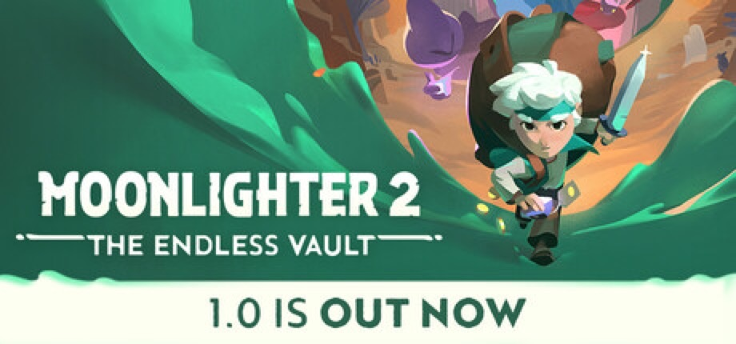
SEP 2 Moonlighter 2: The Endless Vault — 1.0Digital Sun's shopkeeper-by-day, dungeon-crawler-by-night sequel left Early Access on September 2, nine and a half months after entering it, and did so on every platform at once: PS5, Xbox Series, Switch 2 and PC via Steam and the Microsoft Store, with a Game Pass listing on day one. What 1.0 adds is specifically the ending the Early Access build was missing — the seventh and final Endless Vault challenge, which carries the story's conclusion — plus four new Endless weapon variants, more armour, cosmetics and gadgets, the fifth and final shop upgrade level (another Bobbet slot and cosmetic placement), a Bomb Path perk line that lets you tag enemies with explosives for area damage, and a Hardcore mode that takes your relics and progress permanently when you die. The series' move to 3D survives intact: buy low, price high, keep the shop stocked, then take a backpack of loot into an interdimensional collector's vault and try to come back out. 56 achievements. $29.99, cut 30% to $20.99 through September 16. The review picture is the honest part — Very Positive overall at 85% of 1,270 reviews, but the last 30 days sit at Mostly Positive, 78% of 142, which is what a launch-week influx of players hitting a game that had been in Early Access for nine months tends to look like. Physical standard and collector's editions follow on November 13 via Silver Lining Interactive. Steam · RPGFan
-
SEP 2 BOMBANANA! — OUT NOW
The demo that ate Steam Next Fest is now a game. Istanbul's Lefto Studio, published by TARK, shipped BOMBANANA! on September 2 carrying numbers most indie launches never see: over 1 million wishlists, the most-played demo of Steam Next Fest 2026 at more than 6 million demo players, and the second most-played demo on Steam across June to August. The concept explains the spread in one line — three monkeys defuse a bomb; one is blind, one is deaf, one is mute. Exactly three players, no more and no fewer, each holding a different fragment of what's needed, with modules and rules that change between bombs so the only durable skill is working out how to talk to each other. "Communication is key, and everyone has a different idea of what exactly 'good' communication is," as the studio puts it, promising "lots of yelling, desperate gesturing and silly shenanigans." Between the demo and today the team rebuilt more than they had to: a new art direction, three modes (a 30-level Campaign, Endless and Custom), new environments with their own hazards, new puzzles and modifiers, and a full monkey overhaul with emotes, voice-synced animations and the ability to slap your teammates. Server browsing and room codes, controller support, Steam Deck support, 23 achievements and a colourblind mode round it out. Windows and macOS. $7.99, cut 38% to $4.95 until September 9. Opening reception is Very Positive, 96% of 151 reviews. Steam · Press release
-
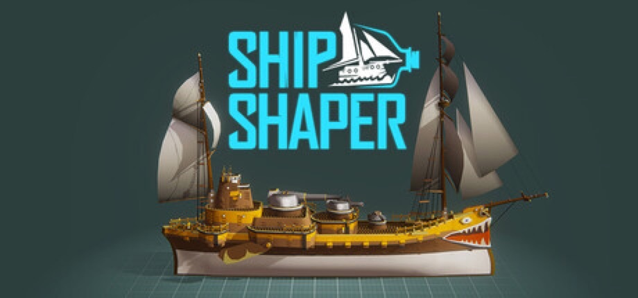
SEP 2 ShipShaper: Falconeer Chronicles — EARLY ACCESSTomas Sala, the BAFTA-nominated solo developer of The Falconeer and Bulwark: Falconeer Chronicles, has put out something with no fail state and no campaign: a game about designing ships, published by Wired Productions with Gamersky Games. You pull, push and drag hull forms into shape — fishing boat to dreadnought — without knowing anything about 3D modelling, then take the result out to sail, where hull shape, propulsion and weight decide how it actually behaves. The part that makes it more than a toy is the export path. Ships come out as FBX or STL for 3D printing or for use in your own projects, under a free commercial licence, and they can be loaded straight into Bulwark — a solo developer treating his own back catalogue as an asset pipeline for other people's work. The Early Access statement is unusually relaxed about scope: minimum three months, with the core feature set already substantially there, and the roadmap listing airships with balloons and flight, an expanded test drive with gun aiming and firing, a ship-analysis system that generates stats, themed content packs (carriers, ocean liners, Asian hull designs) and quality-of-life work. Windows, with Linux via Proton. 10% launch discount. Opening reception is 100% positive across 21 reviews. Steam · Wired Productions
-
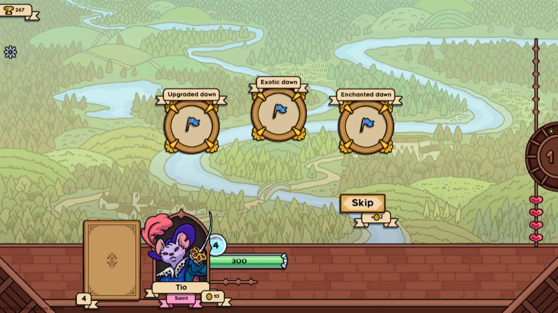
SEP 1 Grail — OUT NOWSokpop Collective — the Dutch group behind Stacklands and Grunn, best known for shipping a game a month to Patreon subscribers for $3 — has released a full-size one. Grail is a deckbuilder in which you never play a card: your deck fights automatically while you watch, and the entire game is what you do between battles. You collect cards, upgrade them, adjust and enchant them, stick stickers on them and pick up traits, aiming for cascading chains that resolve on their own; then the next fight plays out in front of you and tells you whether you were right. It's PvP as well as PvE — you climb from blade-for-hire to master of the auto-battling arts by stacking wins against monsters and other players' decks — with runs deliberately short at 15 to 45 minutes, 250+ cards, 100+ traits and a roster of characters each with their own card pool. Cosmetics and characters unlock by playing rather than paying, and the lore about what the Grail actually is unlocks in pieces for winning with different cards. Credited to Tijmen Tio, one quarter of the collective, and following a demo that has been up since April. Opening reception is Positive at 42 of 45 reviews. $9.99, cut 20% to $7.99. Windows and macOS via Steam. Steam · Sokpop Patreon
-
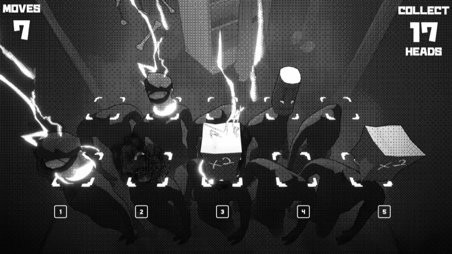
SEP 1 Aerial_Knight's MrFreezy — OUT NOWDetroit solo developer Neil Jones, whose Aerial_Knight's Never Yield and its sequel were bright side-scrolling runners, has made a hard turn: a puzzle game about decapitation, described in its own store copy as "light-hearted." In New Detroit, police are hunting a killer they call Mr. Freezy after hundreds of severed heads turn up in freezers across the city; you play the woman responsible, and the game is what happens in her basement workshop. You don't play as the victims — you help prepare them. Each level is a grid of captives whose heads you move, swap and line up so that a single swing takes as many as possible, scored on heads collected against turns spent, so the tension is a push-your-luck one: cash out early or spend more moves building the perfect chain. Head types are the mechanics — Pumpkin Heads explode on a timer, Stone Heads can't be moved, Old Heads move on their own, Default Heads shift their neighbours when moved — and they stack up until the boards get genuinely chaotic, with story fragments about who this woman is unlocking as you go. Presentation is stark black-and-white halftone. Jones's own note is unusually direct about the risk: "This game is definitely darker than my past games… if you enjoy it please tell your friends about it." A seven-level demo has been up since August. No user reviews yet. $4.99, cut 15% to $4.24, 12 achievements, Windows via Steam. Steam · Gematsu
-
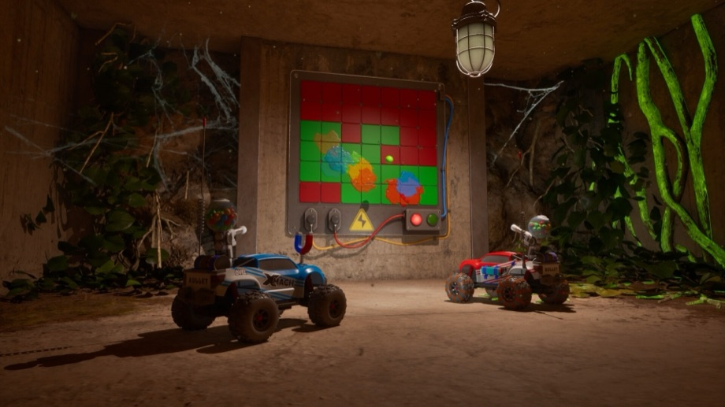
SEP 1 WheelMates — OUT NOWFirevolt's self-published co-op adventure puts two players in a pair of tiny RC cars inside a missing professor's house-sized laboratory, where the ordinary scale of a home becomes the level design: shelves to race across, cluttered desks to drift through, oversized obstacles to get around. It is two-player only and built so that neither half can brute-force it alone — the puzzles are timing and communication problems that need both cars doing their part — and the cars gain gadgets as you go, rope-swings, magnetic wheels and magnet grabs that reopen rooms you've already been through. The commercial detail worth noting is the Friend's Pass: one purchase brings a second player in free, the model It Takes Two and Split Fiction normalised and which is now filtering down to games at a fifth of their budget. Opening reception is Mostly Positive at 38 of 48 reviews, which for a game entirely dependent on having a willing partner is a reasonable start. $19.99, cut 10% to $17.99, 21 achievements, Windows via Steam. Steam
-
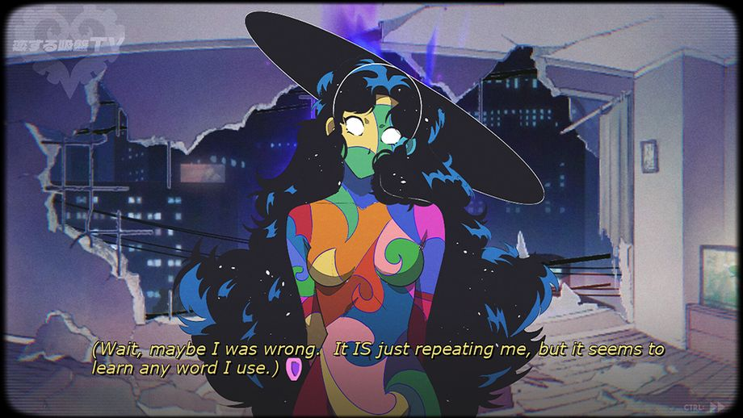
AUG 31 Sucker for Love: Crush Landing — OUT NOWAkabaka's Lovecraftian dating-horror series returns with a standalone entry that opens by promising, in its own Steam feature list, "We really, really promise there's no horror in this one." A comet crash-lands in your living room. Her name is Hheily, she is sentient, she can shapeshift into anything including a person, and she needs feeding — so the loop is keeping her flame alive while her presence warps the neighbourhood around you: plants running wild, colours intensifying, animals mutating, and other things drawn to the heat. The literary sourcing is stated outright and is more specific than usual for the genre: H.P. Lovecraft's The Colour Out of Space and Clark Ashton Smith's The City of the Singing Flame. The apartment from the first game returns as a hand-drawn 360-degree environment, and the script is fully voiced across thousands of lines with multiple endings driven by your choices. The developers describe the content as adult themes plus "comically disturbing body horror" with nothing explicit. Published by Black Lantern Collective, 19 achievements, English audio and subtitles. $12.99, cut 10% to $11.69 until September 7; there's also an "Eldritch Cuties" bundle with Monster Prom 4. Windows via Steam. It went up yesterday, so there's no Steam review score yet — third-party tracker Raijin clocked 258 concurrent players against an estimated 13,000-odd wishlists on launch day. Steam · Raijin stats
-
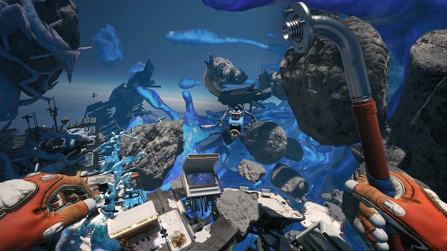
AUG 31 Breathedge 2 — EARLY ACCESSRedRuins Softworks' space-survival comedy sequel is out in Early Access via HypeTrain Digital, and it opens with the Breathedge Corporation having started a galaxy-wide war, built an army of Coffinbots and attacked the largest human settlements — at which point the Man and the AI living in his spacesuit accidentally derail the takeover, become target number one, and then get attacked by their own side. The store copy is unbothered about continuity: "everything will be equally confusing to Breathedge veterans and complete newcomers alike." What ships today is the first major story chapter and one large area, with the full survival and open-space exploration kit — oxygen and temperature management, scavenging, crafting, upgrades, repairs, combat, main and side quests, NPCs — plus, per tradition, an ocean of duct tape. The team is upfront that Early Access is a scale decision for a small studio and expects to stay there roughly 16–20 months, adding the rest of the story, planetary-surface gameplay, base building, and transport running from small flying and ground vehicles up to a personal spacecraft and a warp-jump system. They also warn the price will rise gradually with each major update, so this is the floor. Opening reception is Very Positive, 91% of 116 reviews. $19.99, cut 20% to $15.99 until September 12. PC via Steam, with PS5 announced. Steam · Bleeding Cool
Release list sources: Green Man Gaming — Indie Game Release Round-Up, September 2026, GameGrin — Top 27 New Steam Games This Week (10th–16th of August 2026), Steam — new releases by date, plus per-entry Steam / press links above. Game artwork: official Steam store assets, press kits and site key art, © their respective developers and publishers.
> ABOUT
CyberCycho is a curated digest of itch.io.